Paralelas
Son dos o más rectas que nunca se van a cruzar o cortar. Continuarán infinitamente pero sin encontrarse la una con la otra.
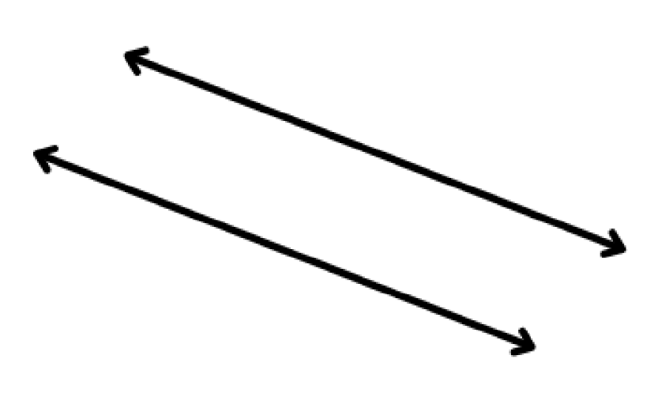Secantes
Dos o más rectas que intersecan o se cruzan en un solo punto, así como se ve en la figura.
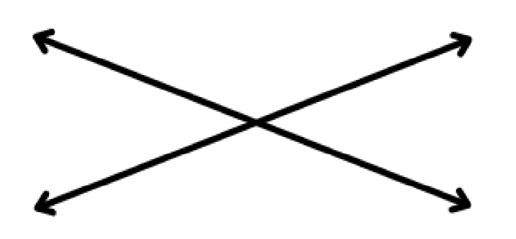Perpendiculares
Son rectas que intersecan o se cruzan en un punto pero, en este caso, formando un ángulo recto en el punto donde se cruzan, así como se ve en la figura.

Llano
Es un ángulo que mide exactamente 180°. Se forman cuando hay una recta entera, aunque es importante recalcar que es la medida completa en toda línea recta. Para que te des una idea mejor, observa la siguiente imagen.
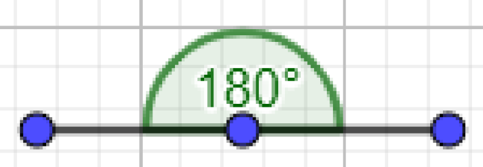Cóncavos
No son tan complejos, solamente miden más de 180°, pero no llegan a dar una vuelta completa.
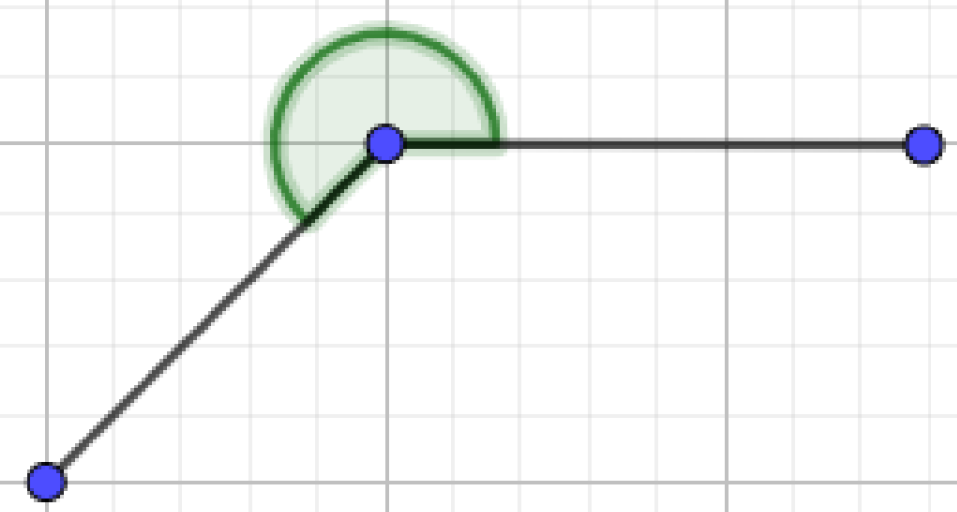Completo
Ángulos que miden exactamente 360°.
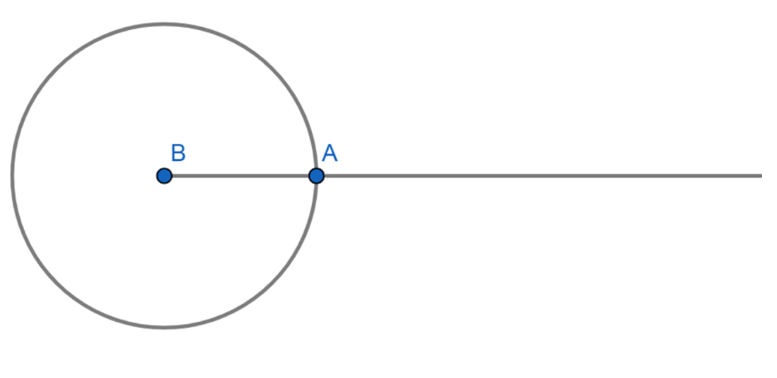Complementarios
Ángulos que sumados son iguales a 90°. Usando el ejemplo de la imagen, el ángulo complementario de 31° es 51°, es tan sencillo como restar 90° menos el ángulo que conoces para saber el complementario.
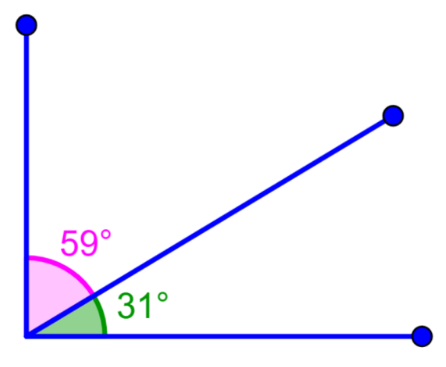Suplementarios
Ángulos que sumados son iguales a 180°. Usando el ejemplo de la imagen, el ángulo complementario de 65° es 115°, es tan sencillo como restar 90° menos el ángulo que conoces para saber el complementario.

Al tener dos rectas paralelas como “m” y “n” y poner una recta o segmento como “t” que interseca a las dos rectas paralelas, se genera una propiedad que muchos conocen como "Z" debido a la forma que tiene y se forman 8 ángulos que se relacionan de distintas maneras.
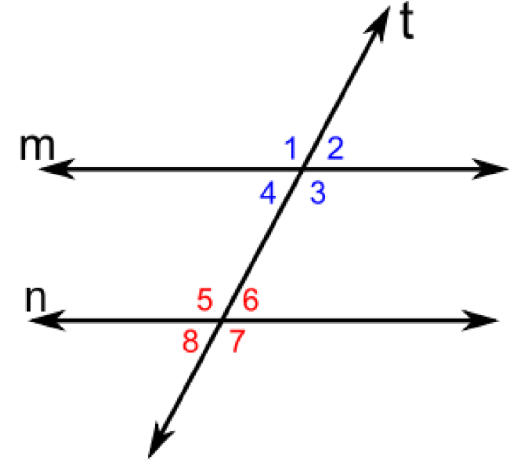Ángulos opuestos por el vértice
Los ángulos que son opuestos por vértice son como un espejo, es decir, se reflejan y son iguales. En este caso, los ángulos 8 y 6 o 4 y 2 son iguales.
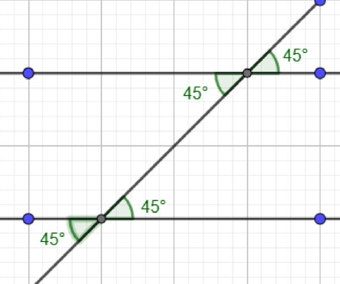Ángulos alternos internos
Los ángulos alternos internos son los ángulos que se encuentran en lados opuestos de una recta transversal y en el interior de dos rectas paralelas.
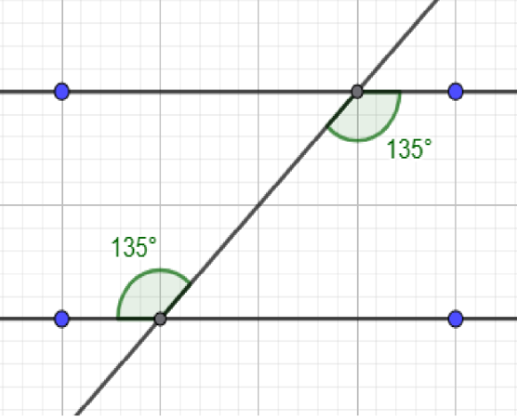 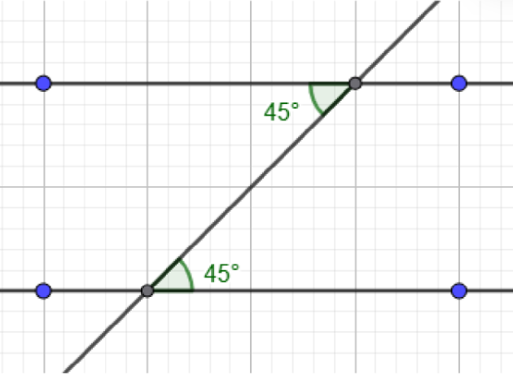Ángulos alternos externos
Los ángulos alternos externos son los son pares de ángulos que se encuentran en lados opuestos de una línea secante y fuera de las dos rectas paralelas.
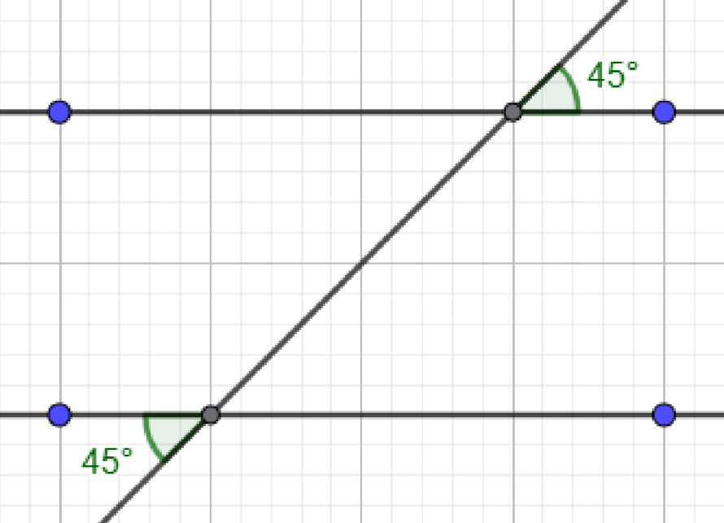Ángulos correspondientes
Los ángulos alternos externos son los son pares de ángulos que se encuentran en lados opuestos de una línea secante y fuera de las dos rectas paralelas.
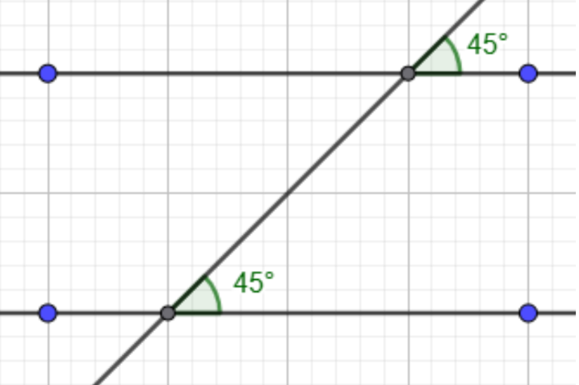 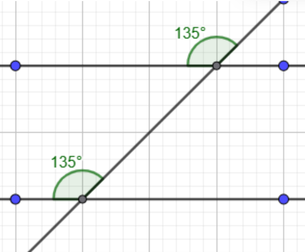Cuando dos rectas secantes cortan a dos rectas paralelas, se forma una figura con un vértice en forma de “pico”. En este caso, el ángulo agudo del vértice (el del pico) es igual a la suma de los dos ángulos agudos que se forman del otro lado, entre las rectas paralelas. La siguiente imagen es un ejemplo de como se aplica la propiedad.
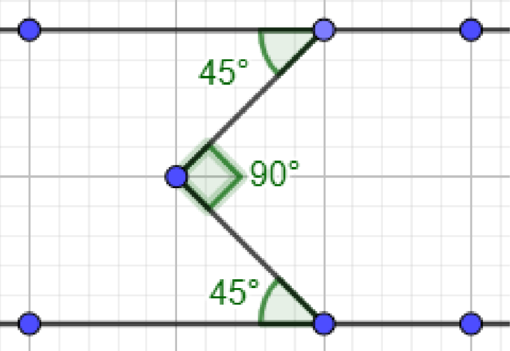Esta propiedad es similar a la anterior. Aquí hay varias secantes que hacen una forma de “zigzag”, pero no es necesario asustarse. Para aplicar esta propiedad, hay que sumar los ángulos agudos que miran para el mismo lado y el resultado debe ser el mismo que la sumatoria de los ángulos que miran para el lado contrario.
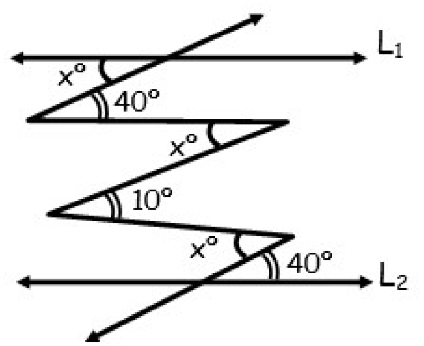En este ejemplo, todas las “x” miran al mismo lado, así que igualamos "3x" con 40 + 10 + 40. Esto nos da que "3x" es igual a 90, por lo que "x" es igual a 30.
1. ¿Cuáles de las siguientes rectas son paralelas?
2. Si un ángulo mide 35°, ¿cuánto mide su complementario?
3. Un ángulo mide 110°. ¿Cuál es su ángulo suplementario?
4. Si dos rectas secantes forman un ángulo de 72°, ¿cuánto mide su ángulo opuestos por el vértice?
5. Si dos rectas paralelas son cortadas por una transversal y un ángulo interno mide 68°, ¿cuánto mide su alterno interno?
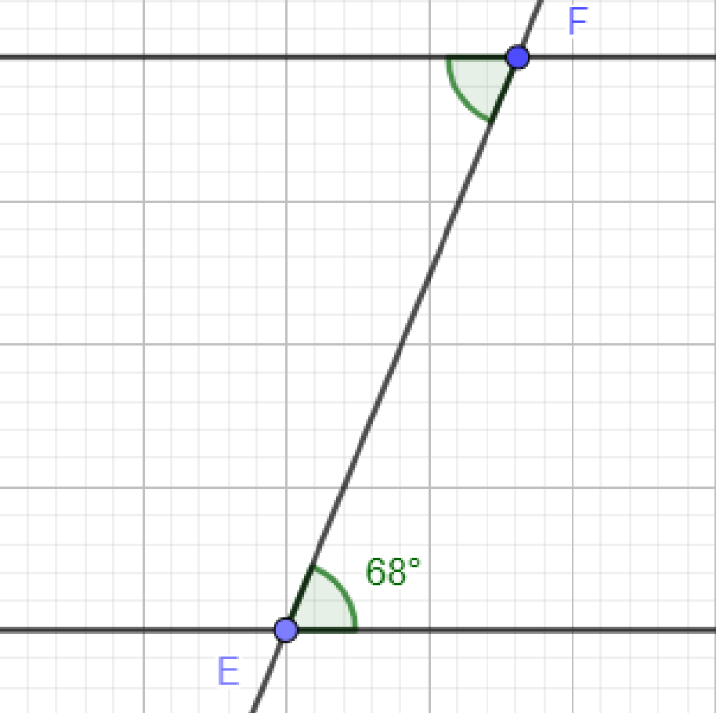
6. Una transversal corta dos paralelas y forma un ángulo de 120°. ¿Cuánto mide su ángulo correspondiente?
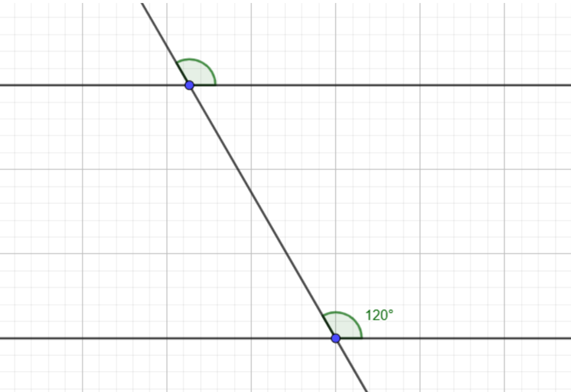
7. Si un ángulo mide x y su adyacente mide (2x – 30), ¿cuánto vale x sabiendo que son suplementarios?
8. Dos rectas paralelas son cortadas por una transversal. Si un ángulo externo mide 75°, ¿cuánto mide su ángulo alterno externo?
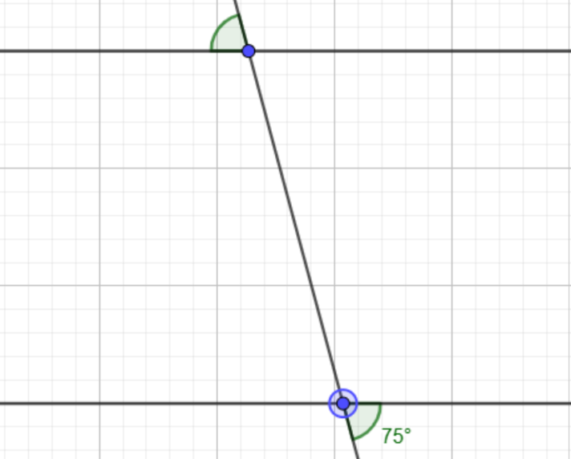
9. En la siguiente imágen las dos rectas son paralelas, cuánto vale el ángulo de color rojo?
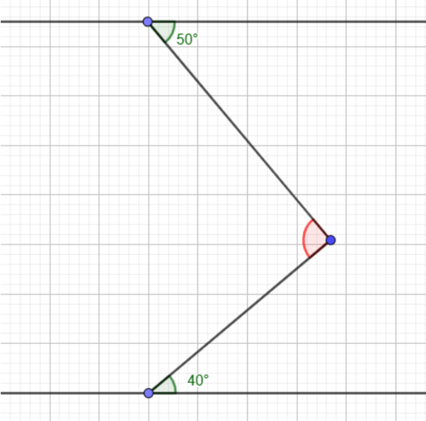
10. En un sistema de varias secantes, tres ángulos que miran al mismo lado miden 40°, 60° y 50°. ¿Cuál debe ser el valor de la suma de los ángulos de color rojo?
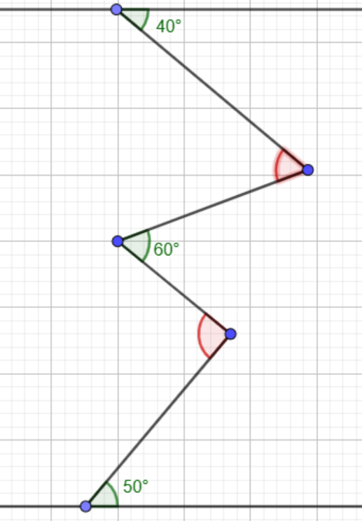
11. En la figura (dos paralelas cortadas por una transversal), un ángulo mide 65°. Calcula su alterno interno, Su correspondiente y su opuesto por el vértice.
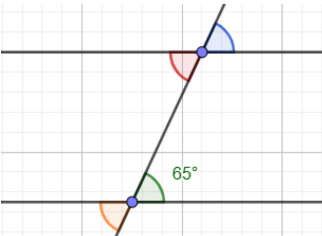
12. En la figura, dos rectas paralelas son cortadas por una transversal. Uno de los ángulos alternos externos mide 120°. ¿Cuánto mide el otro ángulo alterno externo?
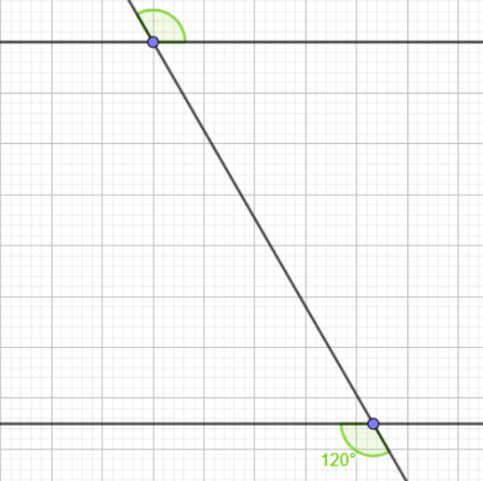